Strike Slip Fault Systems
Created Monday 01 June 2020
@GEOLOGY @ESH @YEAR1
@strike_slips = @Wrench_fault
@σ1 = maximum compression
@σ3 = minimum compression
@σ2 is coming out vertically
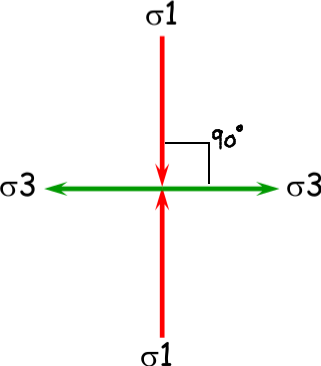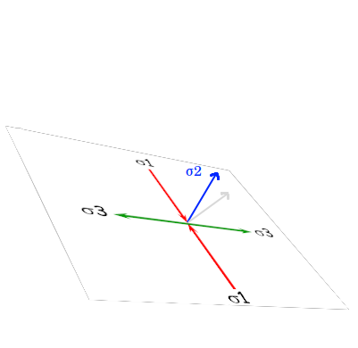
Can be on any scale, from mm to entire continents. Their only bounds are the lengths of continents.
Major strike slip faults on conservative boundaries. @tectonics
Examples are the @San_Andreas_fault and @Turkey
The @Dead_Sea is the result of a stike slip fault
Strike slip fault systems are diverse ≠ contractional or extensional systems which are dominated by contractional/ extensional faults. SSFS have an array of contractional and extensional faults → diverse topography of bays and mountains
Transtension
@Transtension ≠ @Transpression
Transtension happens when there is an extension on the bend of a strike slip fault (because they are never 100% straight lines).
Transpression is when there is compression instead.
If you have to move right to follow the bend, it is @right_stepping
If you have to move left, it is @left_stepping
Transtension happens when it is right stepping on a dexteral system or left stepping on a sinistral
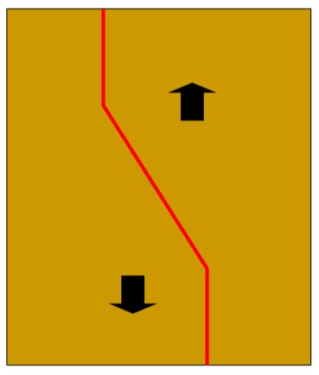
A transtension bend is called a @releasing_bend
The basins formed from the extension are a characteristic rhombus shape, called @spindle_basins
The @Salton_sea and the @Dead_Sea are both spindle basins
Form deep and fast because is it a small amount of lithosphere being stretched.
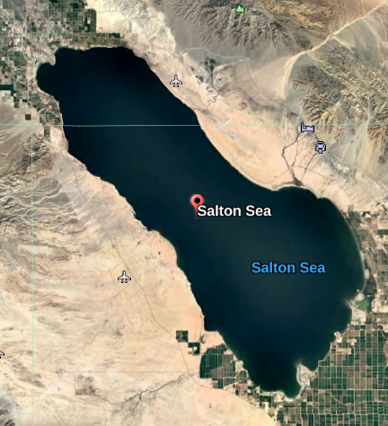
Negative Flower Structures
Negative @Flower_structures when faults grow in the orientation of the bend
Flower structure = @palm_structure
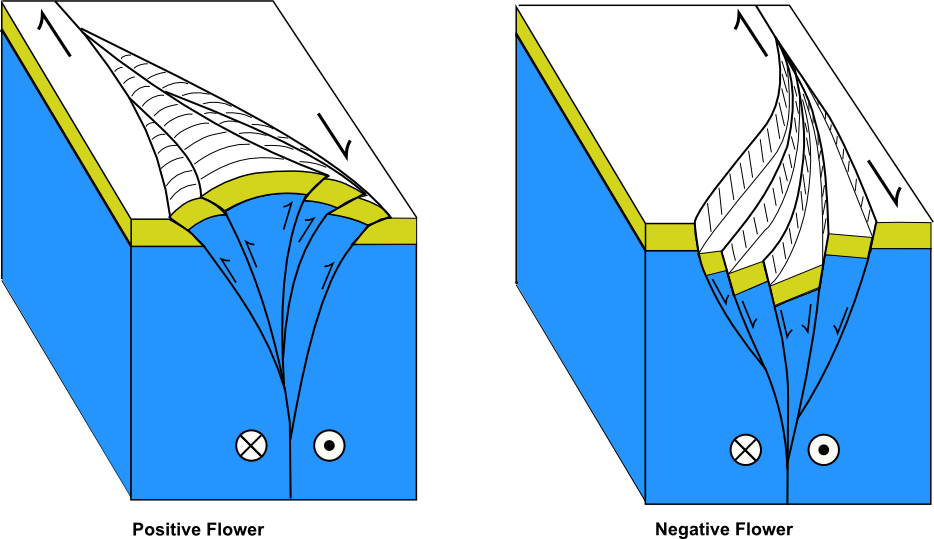
Transpression
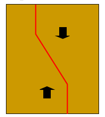
Right step on sinistral or left step on dextral → thrust faults and limited mountain ranges in the same rhombus shape as the spindle basins
@Restraining_bend ≠ releasing bend
Cause large @earthquakes and positive flower structures
San Andreas
The @San_Andreas_fault is a massive dexteral, left stepping fault with a restraining bend known as the @Big_Bend
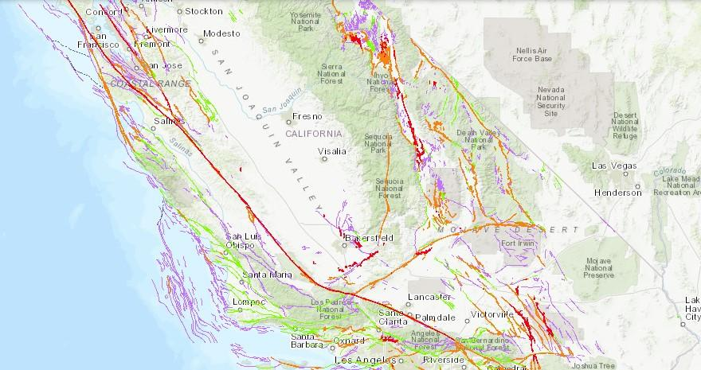
Associated Faults
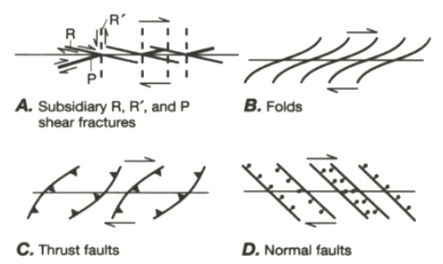
Structure orientations
Fractures:
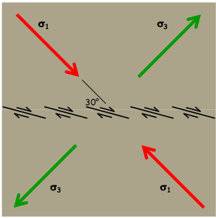
The black faults form at 30° to σ1
Faults that are in the same orientation but overlapping are known as an @en_echellon pattern
The line of faults is at 45° to σ1, but the minor faults that make up the strike slip zone are all at 30°
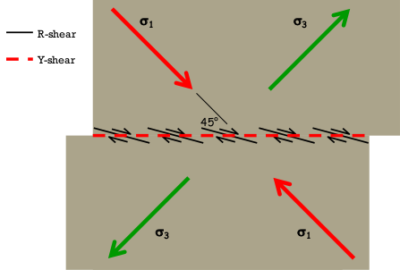
You wouldn't be able to see the offset from standing on the fault, so you can use the angle of the R-shear to calculate the direction of movement.
Thrust Faults:
Thrust faults form perpendicular to σ1 ≠ normal faults which form parallel
Strain Ellipse
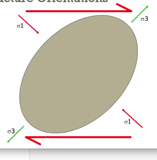
On a @Strain_Ellipse, an undeformed rock is represented by a perfect circle/ sphere
Shortening an axis, means σ1 (where there is the most compresion)
Elongating an axis = σ3 (minimum compresion)
Thrust faults are ∟ to σ1
Extensional faults are ∟to σ3
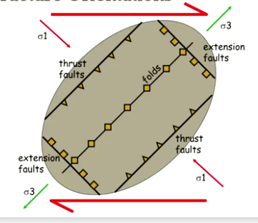
Riedel Shears
@Riedel_Shears are the first faults to form, and are @Synthetic_Faults to the main strike slip fault
Form at 30° to σ1
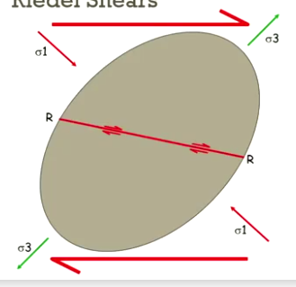
They can cross cut each other but R can't move at the same time as R'
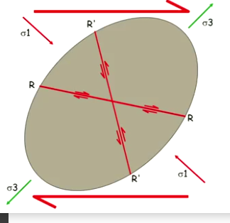
P shears form next (synthetic) and join the R shears together
X then cross cuts P
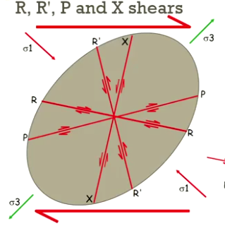
Transform Faults
🎞️See Attachment (00:39:19)
@Transform_faults
@Magnetic_Striping
@earthquakes
Backlinks: Home:Earth Structure and History:Planet Earth:Earthquakes:Earthquake Source Mechanisms